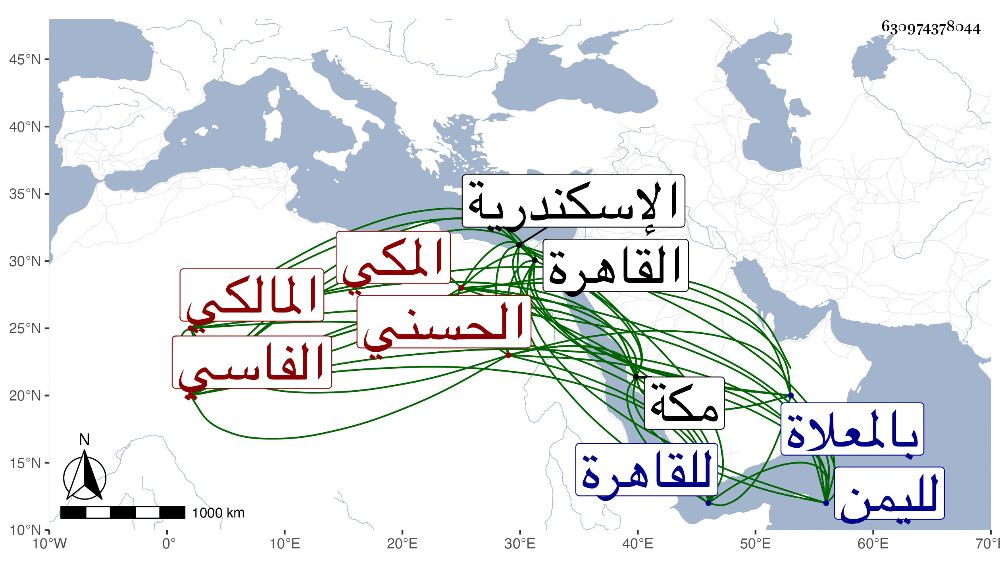

0902Sakhawi.DawLamic.ITO20230111-ara1.EIS1600.630974378044
Biography ID: 630974378044
27
محمد المحب أبو عبد الله الحسني الفاسي المكي المالكي شقيق الذي قبله . ولد سنة أربع وسبعين وسبعمائة بمكة وسمع بها من العفيف النشاوري وعبد الوهاب القروي والجمال الأميوطي وابن صديق وبالقاهرة من ابن أبي المجد والتنوخي والحلاوي والسويداوي في آخرين ، وأجاز له ابن أميلة والصلاح بن أبي عمر وآخرون ، وكان قد حفظ مختصر ابن الحاجب الفرعي وكذا الرسالة وغيرهما وحضر دروس أبيه كثيرا بل قرأ في الفقه بالقاهرة على بعض شيوخها وتميز فيه قليلا . وتكرر دخوله لليمن وكذا للقاهرة ودخل منها اسكندرية ودرس بمكة يسيرا وكذا حدث ، ثم عرض له قولنج تعلل به سنين كثيرة إلى أن مات وقد عرض له إسهال أيضا في ربيع الآخر سنة ثلاث وعشرين وصلى عليه عقب طلوع الشمس عند قبة الفراشين كأبيه ودفن عليه بالمعلاة بقبر أبي لكوط ، ذكره الفاسي قال وهو ابن عمتي وابن عم أبي . وذكره شيخنا في ترجمة الذي بعده من إنبائه وقال إنه مهر في الفقه . وهو في عقود المقريزي رحمه الله .
